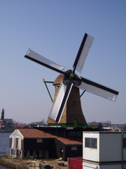

mPDF
New features in mPDF Version 5.1
- CSS background (images, colours or gradients) on <TR> and <TABLE>
- CSS border on <TR> (only in border-collapsed mode)
- support for Mozilla and CSS3 gradient syntax:
- -moz-linear-gradient, linear-gradient
- -moz-radial-gradient, radial-gradient
- -moz-repeating-linear-gradient, linear-repeating-gradient
- -moz-repeating-radial-gradient, radial-repeating-gradient
- expanded support for gradients (including in SVG images):
- multiple colour \'stops\'
- opacity (transparency)
- angle and/or position can be specified
- etc...
Mozilla and CSS3 gradient syntax
Linear gradients
Angle set AND points e.g. -moz-linear-gradient(34% 84% 30deg, red, orange, yellow...
| top right 210 degrees |
|
|
| 30% 80% 60 degrees |
|
|
Angle set but no points e.g. -moz-linear-gradient(30deg, red, orange, yellow...
Radial gradients
Gradient Image mask
Gradients (linear or radial) can also be used to produce \'masks\' for images. The same syntax is used as for background gradients (e.g. -moz-linear-gradient) but is set using a custom mPDF style: gradient-mask. The rgba() method for defining colours is used: colours are ignored, but the opacity value is used to mask the image.
<img src="windmill.jpg" style="gradient-mask: -moz-radial-gradient(center, ellipse closest-side, rgba(255,255,255,1), rgba(255,255,255,1) 30%, rgba(255,255,255,0) 90%, rgba(255,255,255,0));" />
<img src="windmill.jpg" style="gradient-mask: -moz-radial-gradient(center, ellipse closest-side, rgba(255,255,255,1), rgba(255,255,255,1) 70%, rgba(255,255,255,0) 90%, rgba(255,255,255,0));" />
<img src="windmill.jpg" style="gradient-mask: -moz-linear-gradient(left, rgba(0,0,0,0) , rgba(0,0,0,1) 50% , rgba(0,0,0,0) 100%);" />

Image orientation
Images can be rotated using a custom mPDF HTML attribute: rotate. mPDF now also supports the draft CSS3 property of image-orientation. Rotation can be expressed in degrees, radians or grad units; it is corrected if necessary to an orthogonal rotation i.e. 90, 180 or 270 degrees. NB This does not work on background-images.
<img src="tiger2.png" style="-moz-transform: rotate(20deg); -webkit-transform: rotate(20deg); -o-transform:rotate(20deg); -ms-transform: rotate(20deg); transform: rotate(20deg);" width="100" />
<img src="tiger2.png" style="-moz-transform: rotate(270deg); -webkit-transform: rotate(270deg); -o-transform:rotate(270deg); -ms-transform: rotate(270deg); transform: rotate(270deg);" width="100" />

Mixed effects